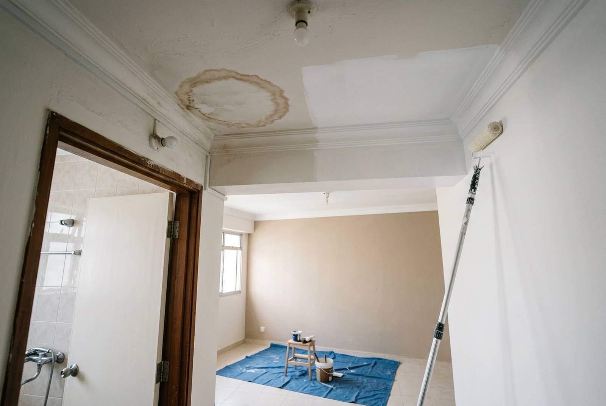

Ceiling painting and water stains: seal first, then paint

Painting a ceiling is one of the simplest jobs in a flat until there is a water stain on it. Then the usual result is that the brown ring comes straight back through two fresh coats of white within days. The fix is not more paint: it is confirming the leak has stopped, letting the ceiling dry, and putting a stain-blocking sealer on before the topcoat. Ceiling-only painting for a room typically runs $60 to $120, and a stain treated properly adds little to that.
Why water stains come back through new paint
When water passes through a concrete slab and plaster, it carries dissolved minerals and residue with it. As the water evaporates at the surface, it leaves them behind as the familiar brown or yellow ring. Those deposits are water-soluble. Ordinary ceiling paint is water-based, so as it goes on wet it redissolves the stain and pulls it up into the new film. The paint looks white while wet and the ring reappears as it dries.
A stain-blocking sealer, typically oil- or solvent-based, does not redissolve the deposits. It locks them under a barrier that the water-based topcoat then sits on. This is the same reason our plastering jobs are finished with an oil-based sealer before the emulsion.
First, make sure the leak has actually stopped
Sealing and painting a ceiling that is still getting wet wastes the job. Before painting:
- Find out where the water came from. Below a bathroom, it is almost always the waterproofing, the floor trap or a pipe joint in the flat above. Near a window or external wall, it can be rain.
- Check the stain after rain and after the upstairs bathroom is used. If it darkens or feels cool and damp, it is still live.
- Let it dry fully. A slab that has been wet for weeks can take weeks to dry. Paint over damp plaster and it blisters.
- Check the plaster. Soft, crumbly or bulging plaster has to be scraped back and made good before sealing; see peeling paint and wall repair.
Who pays for an inter-floor leak
HDB flats. HDB publishes guidance on ceiling leaks between flats, including an inspection service. Its general position is that the owners of the upper and lower flats share the cost of fixing an inter-floor leak. Check HDB's site for the current terms before starting, because the repair has to be done from the flat above; painting your ceiling first only hides the evidence.
Condos. Under Singapore's strata management law, a leak through the ceiling of a unit is presumed to come from the unit above until shown otherwise, and the managing agent or MCST is the first contact where common property may be involved. BCA publishes guidance for strata owners. Keep dated photos of the stain.
Once the source is fixed and the ceiling has dried, the cosmetic repair below is the last step.
How a stained ceiling is painted properly
- Protect the room. Ceiling work drips; floors and furniture are covered.
- Scrape and prepare. Loose or flaking paint is scraped back, damaged plaster is made good and sanded.
- Treat any mould that grew while the ceiling was wet. See anti-mould paint.
- Stain-blocking sealer over the stain and a margin around it.
- Two coats of ceiling white over the whole ceiling, not just the patch. A patch on a ceiling is visible in any light because of the angle.
Ceilings are painted with a roller on an extension pole, cutting in at the cornice or wall line by brush. It is slower and messier than walls, which is why ceilings cost proportionally more per square metre.
What ceiling painting costs
| Job | What it covers | Indicative cost (SGD) |
|---|---|---|
| One room ceiling | Two coats of ceiling white | $60 – $120 |
| One room ceiling with a water stain | Prepare, stain-blocking sealer, two coats over the whole ceiling | $100 – $200 |
| Bathroom ceiling with mould | Fungicidal wash, sealer, two coats anti-mould | $120 – $250 |
| All ceilings and selected walls, with plastering | Scrape off, bonding coat, plaster and skim, sealer, two coats (real quote, Serangoon Central HDB, Sept 2026) | $2,400 |
| Whole flat, walls and ceilings | Two coats throughout, no plastering | $450 – $1,400 by flat size |
The Serangoon Central quote is the outlier worth reading. That flat's ceilings had failed, not just stained, so the price is for stripping and replastering them, not for paint. The same quote offered the whole flat for $4,050. If a ceiling only has a stain on sound plaster, you are in the second row, not the fourth.
False ceilings and cove lighting
Board false ceilings are painted the same way, but a water stain on one is a stronger warning: gypsum board softens and sags when wet, and a stained board may need replacing rather than painting. Water above a false ceiling can also sit on the board for a long time before it shows. If there is cove lighting or downlights near the stain, have the wiring checked before anyone touches it.
Can I paint it myself?
A small stain on a flat ceiling is a manageable DIY job if the leak is fixed and the ceiling is dry: stain-blocking primer from a hardware shop, then two coats of ceiling white over the whole ceiling. The common failure is skipping the sealer and painting only the patch. Ceiling work above head height on a ladder, near lights and fans, is also where most DIY painting accidents happen.
Frequently asked questions
Why does the water stain come back after I paint over it?
The minerals left by the water are water-soluble, so water-based paint redissolves them and pulls them into the new film as it dries. A stain-blocking sealer, usually oil- or solvent-based, locks the stain under a barrier before the ceiling paint goes on.
How much does it cost to paint a ceiling in Singapore?
About $60 to $120 for a single room ceiling in two coats. A ceiling with a water stain that needs preparation and a stain-blocking sealer is around $100 to $200. Ceilings that have failed and need replastering cost far more; a real quote for all ceilings and selected walls in an HDB flat, with plastering, was $2,400.
Can I paint over a water stain on the ceiling?
Only after the leak has been fixed and the ceiling has dried fully, and only with a stain-blocking sealer first. Painting over a live leak hides the evidence and the stain returns.
Who pays for a ceiling leak from the flat above?
For HDB flats, HDB's published guidance generally has the upper and lower flat owners share the cost of repairing an inter-floor leak, and HDB can inspect. For condos, the leak is presumed to come from the unit above until shown otherwise, and the managing agent is the first contact. Check HDB or BCA guidance for current terms before any work.
Should I paint the whole ceiling or just the stain?
The whole ceiling of that room. Seal the stained area, then give the entire ceiling two coats, or the patch will show as a different white.
Getting it done by RK E&C
RK E&C is a Singapore-registered renovation and handyman company (UEN 202442767D). We paint and plaster ceilings, and we also do the bathroom waterproofing and plumbing that usually cause the stain, so if the leak is in a unit you own or manage, the cause and the ceiling can be fixed in one job. The sealer is a named line on our quotes, because it is the one a cheap ceiling repaint leaves out.
Send a photo of the stain and tell us what is above it through our contact form or WhatsApp. See our painting services for whole-flat work.
Stain on the ceiling?
Send a photo and tell us what is above it. Once the leak is dealt with, we seal and repaint the whole ceiling so the stain stays gone.
Prices are indicative of the Singapore market in 2026 and are not a quotation, except the $2,400 and $4,050 figures, which are from an actual RK E&C quotation dated 7 September 2026. Responsibility for leaks depends on the facts and on current HDB or strata rules; check the official guidance and your own documents.